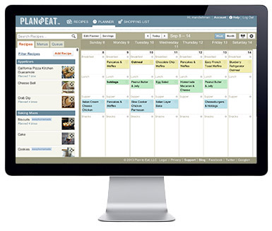
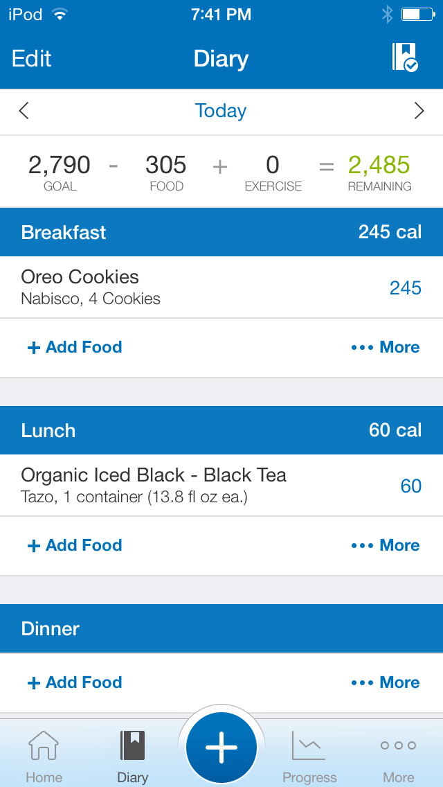
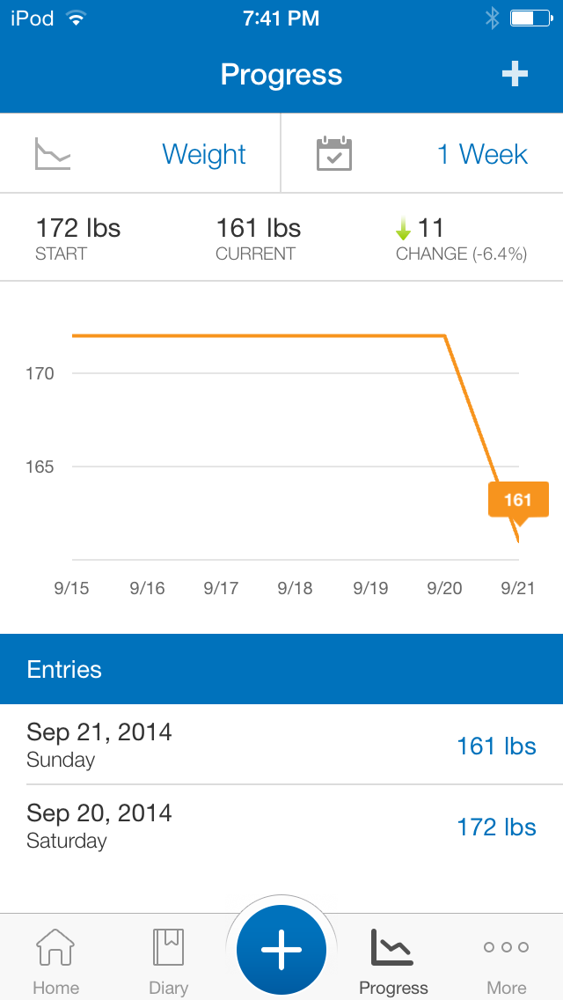
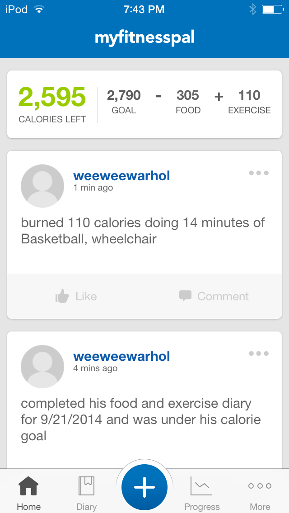
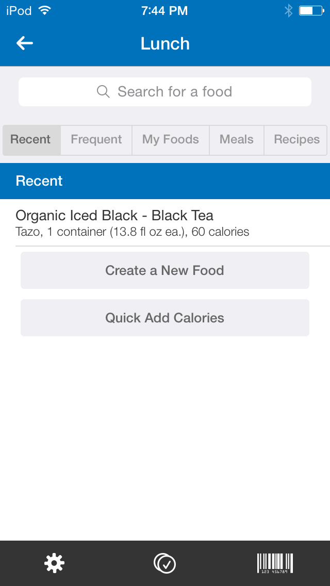
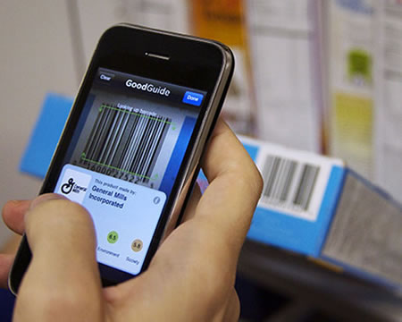
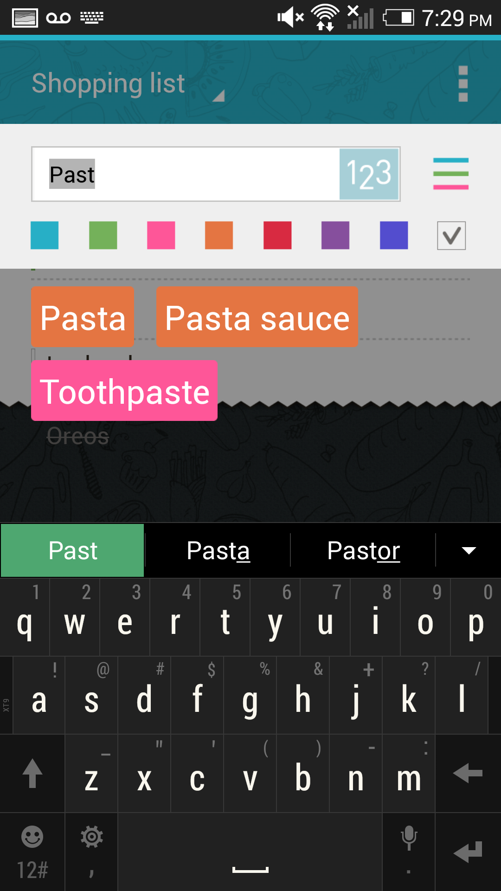
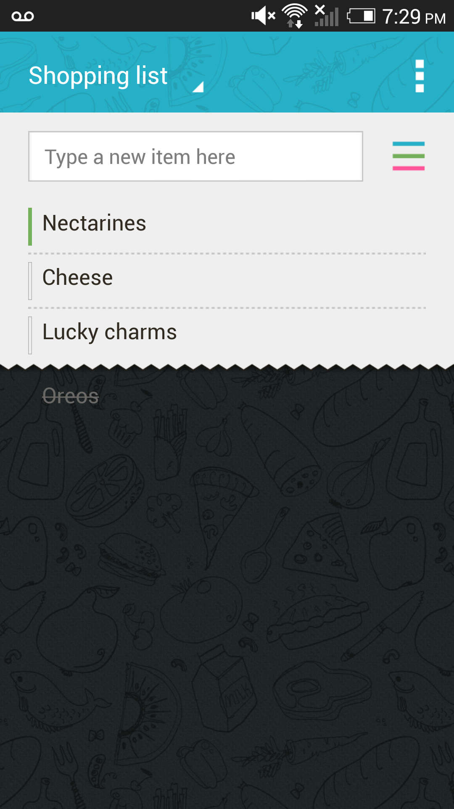

Inspirations
- PlanToEat
Allows you to put in your recipes, then drag them onto a calendar to make meal plans. Recipes can be imported from websites, entered manually, or copied from your friends. It constructs a shopping list from the meals you have planned for the next week, and lets you assign items to lists for different grocery stores or exclude items. Some users (especially those without a lot of friends using the service) have trouble finding enough recipes they want, though many others encounter enough while browsing the internet that they can fill their plans quickly. Users also find the site difficult to navigate at first, but in general once people figure it out, they love it. (Rachel)
 - MyFitnessPal
An app to count calories designed to help you achieve your weight-loss goals. The app allows users to keep a diary of and track the nutritional value of the food and drinks they have consumed. Additionally, the app allows users to track their exercise regimens, and the associated caloric loss. The primary focus is giving users a clear picture of their caloric situation with respect to their weight-loss aspirations. The salient strengths of the app are the the diary and progress displays both of which compactly present a lot of information. The most challenging aspect of the myfitnesspal experience is inputting the various foods one consumes. Although inputting food does appear to get easier after prolonged usage. (Mateusz)
    - Reverse Image Search
Google has a reverse image search which is inspiring. It works very well while shopping because you can use it to take pictures of things or barcodes and get more details about the product. It could be used in a grocery store to get information about price, nutrition, allergy information would be really useful. Keeping track of budgets and nutrition while shopping would be easier because you wouldn’t need to write down information manually. (Ankeet)
 - BuyMeAPie
This app comes in a free version and a paid for version. The free version manages lists where users can enter desired items. The app is very clean and simple, and users can type items into a search which will suggest auto-completes. For example, typing “cheese” will also suggest options for bleu cheese. Clicking on an item in the list will cross it off, which I have done accidentally twice already. The paid-for version allows you to sync between many devices, meaning that families can collaborate on lists. Lists can also be sent via text or email. (Casey)
  - ZipList
“Richly featured shopping tool, recipe organizer, and meal planner” (Description from website)(Rachel)
- GroceryIq
App that syncs grocery lists, orders things by aisle, allows barcode scanning, and has several other useful features. It is now broken and causes phones to freeze. (Ankeet)
- BlueApron
A service that ships you all the food and recipies for 3 meals a week.(Rachel)
- myShopi
A shopping list app that allows users to manage lists to many stores at once. (Mateusz)
- Saving Star
A grocery shopping coupons and offers App. Allows you to redeem coupons through your reward cards to various stores. (Mateusz)
- Toshl
A very simple, easy to use, budget tracking app. (Ankeet)